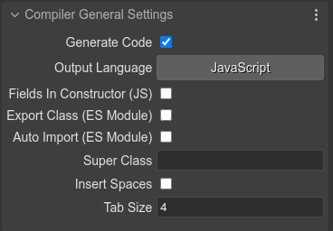

Compiler settings
The scene compiler uses two different sets of parameters to refine the code generation of a Phaser scene and a prefab file. However, there are general, or shared settings, used in both cases:
The parameters:
Generate Code: un-check it if you don’t want the compiler to compile the file. In the Using a prefab as a black box section there is an example that uses a scene file without code generation.
Output Language: you can select if the scene is compiled into JavaScript or TypeScript. In case you select TypeScript, you need to compile yourself the TypeScript generated files, with the TypeScript compiler (
tsc).Fields In Constructor (JS): enable this for generating the initialization of the attributes in the class constructor. By default it is false and the fields are initialized in the class declaration. This parameter is used only when the output language is JavaScript.
Export Class (ES Module): includes the
export defaultclass modifiers.Auto Import (ES Module): adds “import” statements for importing the types used in different parts of the code generation. Code written by the user is not processed. If you use other types, you should import them manually.
Super Class: you can force the generated class (prefab or scene), to extends the given class. If empty, the compiler will detect the appropriate class.
Insert Spaces: if checked, the tabs will be converted to spaces.
Tab Size: the number of spaces to be used if the Insert Spaces option is checked.
By the way, the name of the file and the class that is generated by the compiler is the same as the scene file. For example, a Zombie.scene file is compiled into Zombie.js (or Zombie.ts) and the name of the class will be Zombie.